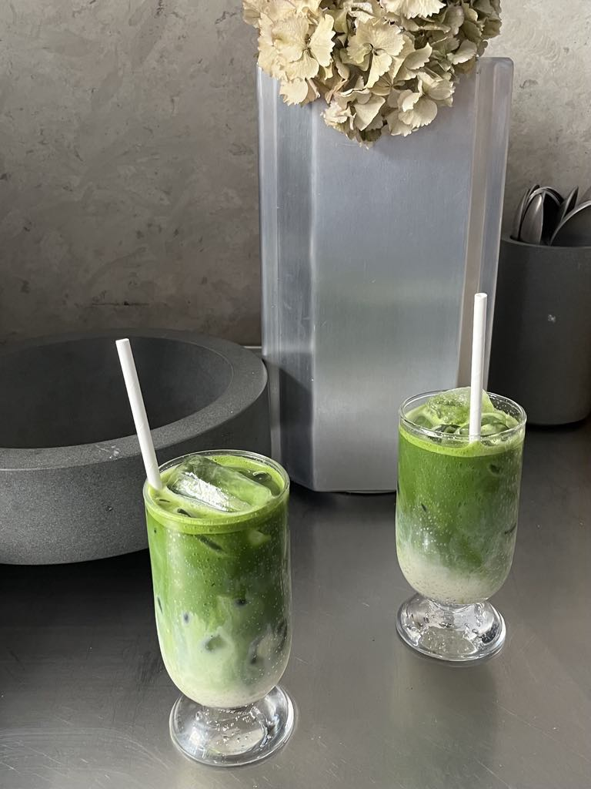
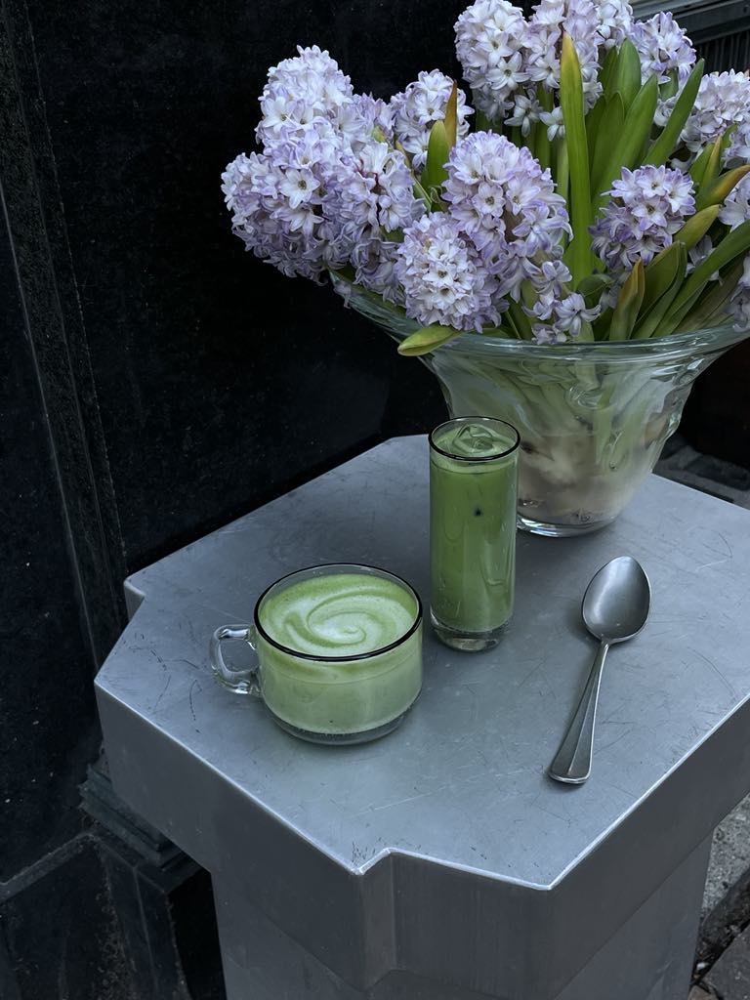

Lav din egen matcha derhjemme
Redskaber:
- Matcha pulver
- Matcha pisk
- Bambus ske
- Matcha si
- Skål (efter eget valg)
- Mælk (efter præference)
- evt. Sødemiddel (efter eget behov)
- evt. Isterninger (hvis ønsket kold)

Fremgangsmåde:
- Tilsæt 2 skeer matchapulver til din skål.
- Opvarm 1/2 dl varmt vand, til ca. 80 grader.
- Pisk sammen med dit bambuspiskeris, til det er en helt glat masse uden klumper.
- Hvis ønsket sødemiddel, tilføj dette og pisk videre.
- Overfør Matchamassen til et glas eller en kop.
- Tilføj mælk og evt. isterninger.
Nu kan du nyde din helt egen matcha.
